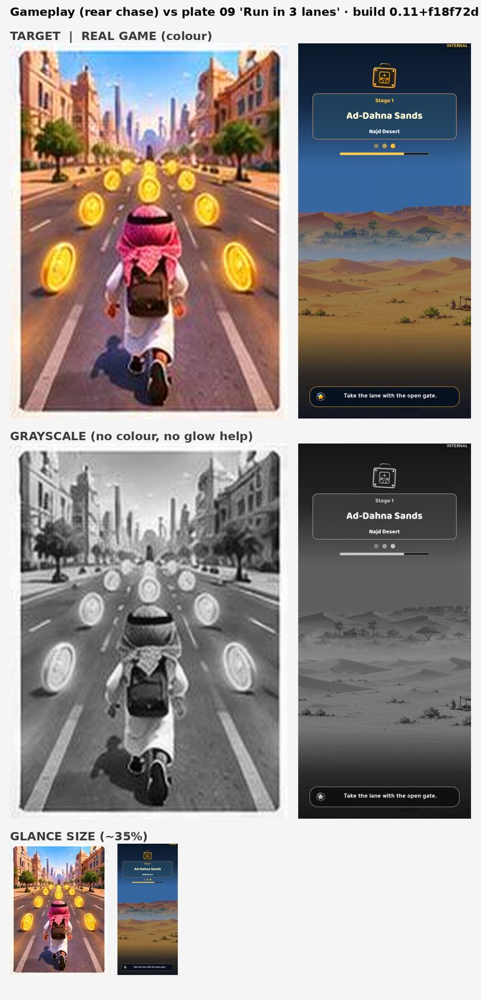
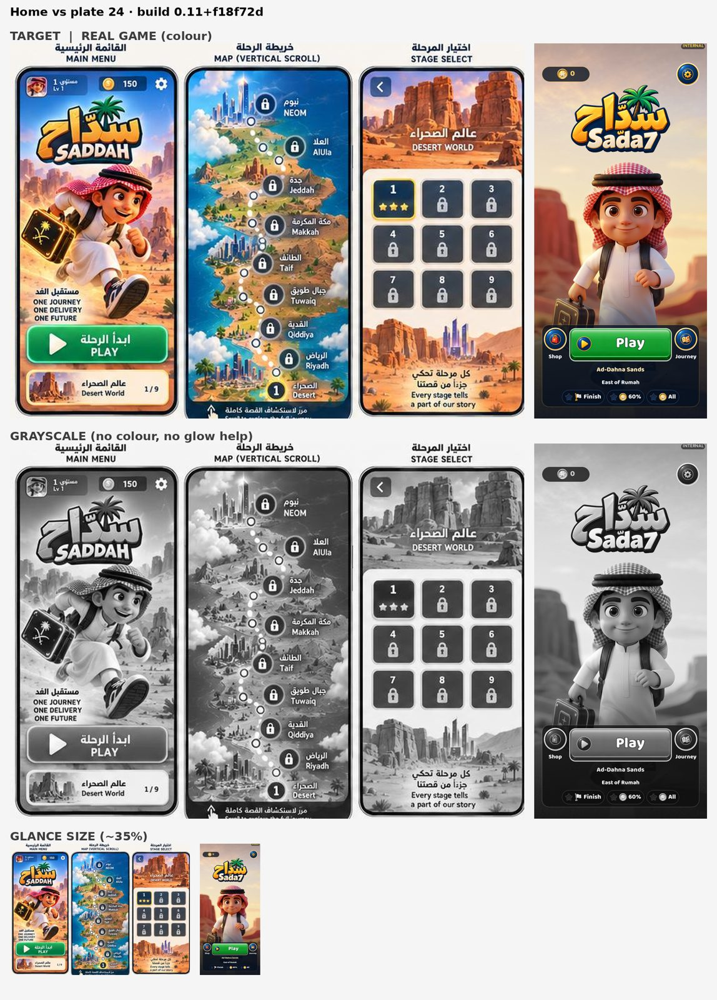
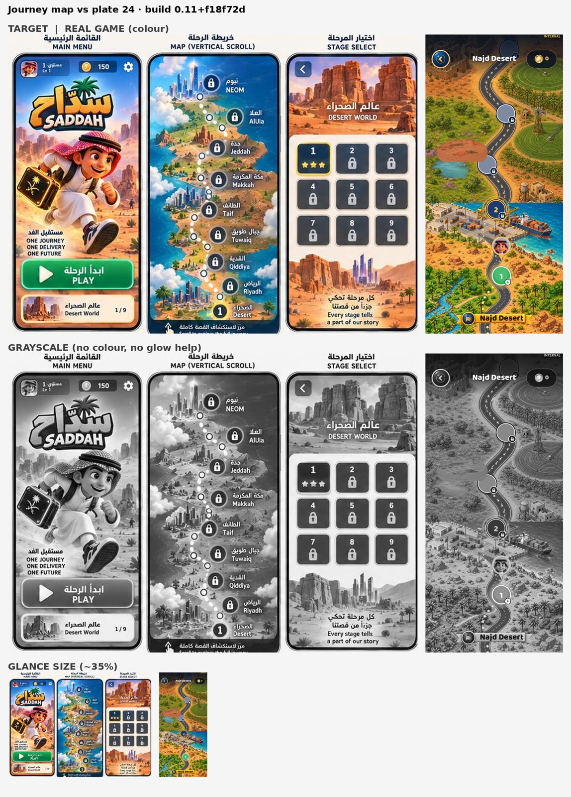
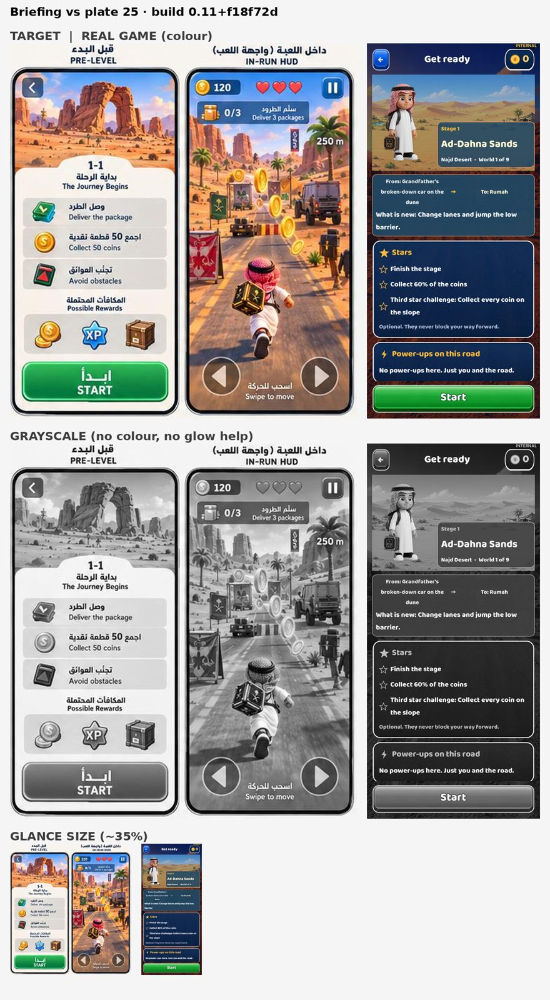
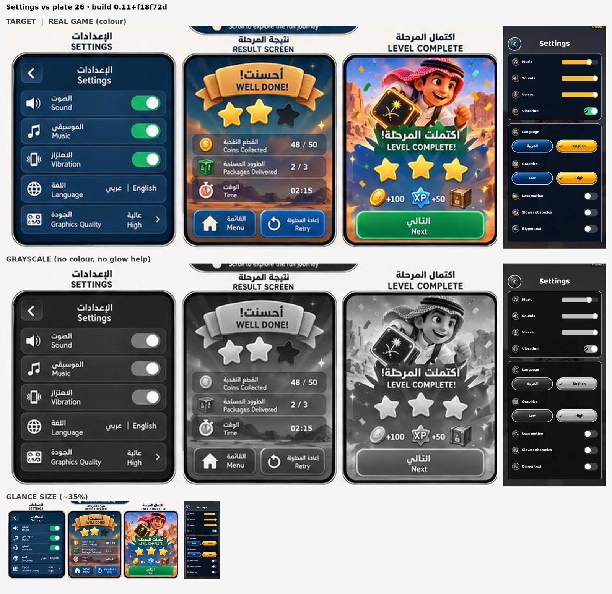
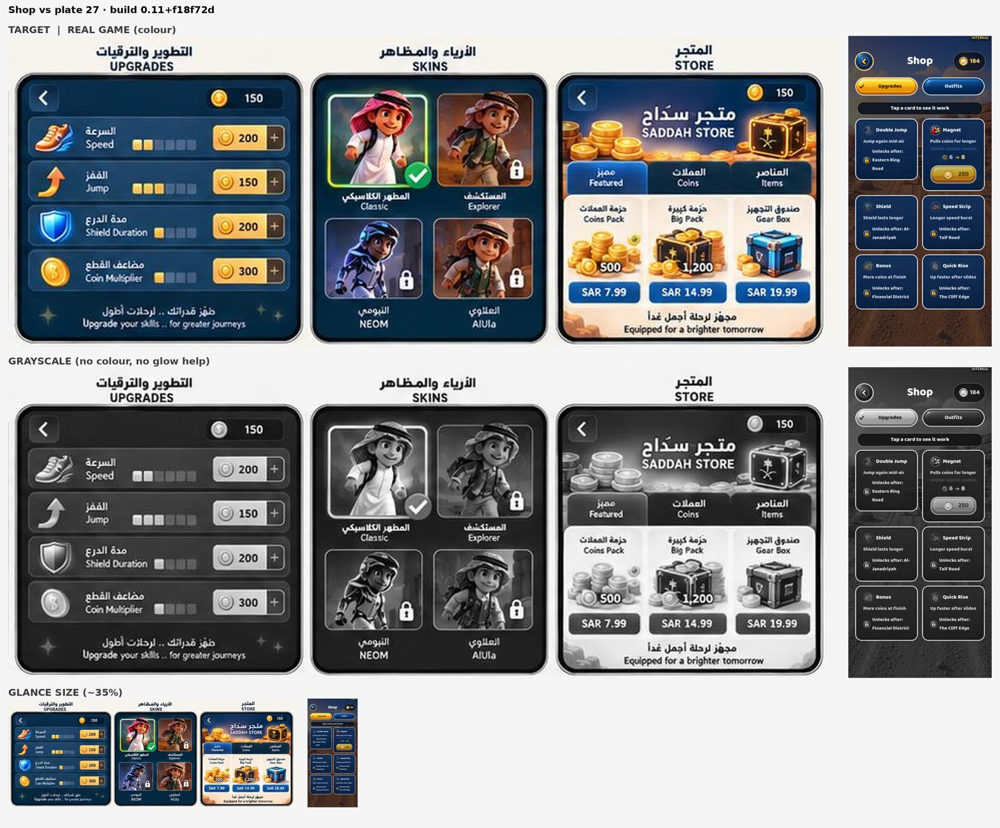

build.json · automated checks for build 0.11+f18f72d
Automated: measured from 1 bot run(s) (event logs). Targets: config/build_checks.json feel.targets (+ studio defaults). It shows pacing and systems working; it does not show that a person finds it fun.
| Target | Threshold | Passing runs | Median |
|---|---|---|---|
| Empty screen time (share of play) | ≤ 1.0 | 1/1 ✅ | 0.05 |
| Longest empty gap (s) | ≤ 999 | 1/1 ✅ | 3.0 |
| Empty gaps over 2 s | ≤ 999 | 1/1 ✅ | 1 |
| Time to first power-up P2 (s) | ≤ 999 | 0/1 ⚠️ | – |
| Time at top power level (share) | ≥ 0.0 | 1/1 ✅ | 0.0 |
| Pickups collected (share) | ≥ 0.6 | 1/1 ✅ | – |
| Bot deaths | ≤ 0 | 1/1 ✅ | 0 |
| Mean enemies on screen | ≥ 0.0 | 1/1 ✅ | 3.89 |
| Run | Unit | Result | Play s | Empty % | Longest gap | Gaps>2s | → P2 s | Time at P1/P2/P3/P4 % | Pickups | Mean enemies | Supers | Fails |
|---|---|---|---|---|---|---|---|---|---|---|---|---|
| W01-L03 | saddah | unknown | 75.0 | 5 | 3.0 | 1 | None | 0/0/0/0 | – | 3.89 | 0 | Time to first power-up P2 (s) |
Automated: each capture from this build beside its visual-bible target (sheets below), with measured differences. The numbers flag drift; they don't judge quality. Look at the sheets.
| # | Screen | Lightness (build / target) | Contrast | Colourfulness | Dark share | Highlights | Drift flags | Sheet |
|---|---|---|---|---|---|---|---|---|
| 1 | Gameplay (rear chase) vs plate 09 'Run in 3 lanes' | 33.3 / 56.5 | 16.2 / 23.2 | 21.8 / 25.7 | 0.26 / 0.05 | 0.01 / 0.2 | darker, flatter, missing highlights/glow | art_01.jpg |
| 2 | Home vs plate 24 | 53.4 / 59.5 | 30.3 / 24.9 | 22.9 / 23.8 | 0.22 / 0.06 | 0.28 / 0.25 | – | art_02.jpg |
| 3 | Journey map vs plate 24 | 48.8 / 59.5 | 18.6 / 24.9 | 38.3 / 23.8 | 0.09 / 0.06 | 0.02 / 0.25 | more saturated, missing highlights/glow | art_03.jpg |
| 4 | Briefing vs plate 25 | 33.4 / 65.4 | 22.3 / 25.0 | 25.7 / 21.4 | 0.43 / 0.05 | 0.05 / 0.36 | darker, missing highlights/glow | art_04.jpg |
| 5 | Settings vs plate 26 | 18.0 / 46.1 | 22.2 / 27.6 | 14.4 / 21.5 | 0.75 / 0.15 | 0.04 / 0.17 | darker, missing highlights/glow | art_05.jpg |
| 6 | Shop vs plate 27 | 26.2 / 47.6 | 19.0 / 31.7 | 21.4 / 17.8 | 0.52 / 0.26 | 0.04 / 0.26 | darker, flatter, missing highlights/glow | art_06.jpg |
| Screen | Build | Target |
|---|---|---|
| Gameplay (rear chase) vs plate 09 'Run in 3 lanes' | #131d2b #7d6c56 #536176 #224464 #574435 #8d7f67 | #946257 #8f524e #b98973 #5e403c #fce8be #c0d3de |
| Home vs plate 24 | #211b24 #f3e1bc #a95c46 #b0af95 #5f5347 #eccda1 | #b07657 #464149 #f8f1e7 #417081 #a0aca8 #efb98b |
| Journey map vs plate 24 | #334031 #ecaa50 #79562c #876d2f #8d8240 #8ea261 | #b07657 #464149 #f8f1e7 #417081 #a0aca8 #efb98b |
| Briefing vs plate 25 | #0b2449 #244660 #79897b #8cb59a #29263c #595d5f | #f9f5ef #c88661 #614645 #b7c5c5 #6e7f7c #f3cdaa |
| Settings vs plate 26 | #0a1220 #2d323c #9a8e67 #06101e #141925 #02244d | #0e3250 #417177 #a17c68 #42414d #f8e9d0 #b1baab |
| Shop vs plate 27 | #112749 #3b2721 #0a2346 #484c58 #a59d87 #313342 | #092a44 #203c59 #85807a #f9f1e3 #53403f #ddd9cc |
Target: every role pair ≥ 25.0.
| Roles | Closest pair ΔE | Result |
|---|---|---|





